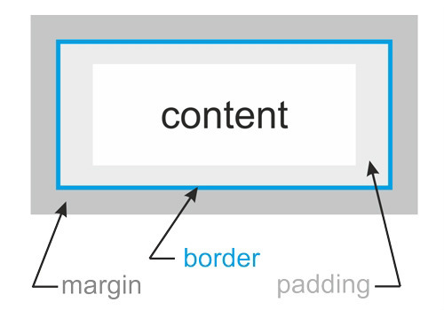

Les balises HTML (aussi appelées "tag") s'écrivent dans les fichiers .html
La liste exhaustive de toutes les balises HTML existantes est disponible sur w3schools.com
<p>Je suis un paragraphe</p>
<strong>Je suis en exergue, car je suis IMPORTANT !</strong>
<!-- Je suis un commentaire invisible pour l'utilisateur final -->
<div>Je prends toute la largeur de mon parent car J'AI DES CHOSES À DIRE !</div>
<span>Je m'adapte à la taille de mon contenu, modestement</span>
Les classes CSS servent à styliser les balise HTML. Le code CSS s'écrit la plus part du temps dans un fichier .css distinct qu'il faut lier au fichier .html avec une balise <link> dans le <head> :
<html>
<head>
<title>Le titre de ma page</title>
<!-- Ici je dis à ma page HTML ou trouver le fichier .css -->
<link rel="stylesheet" href="style.css">
</head>
<body>
<!-- Le corps de ma page -->
</body>
</html>
Pour avoir la classe, il nous faut un attribut class :
<div class="fond-noir">Je n'ai pas mauvais fond...</div>
...mais il nous faut également du code CSS à appliquer sur cette balise :
/* ça, c'est un commentaire */
.fond-noir {
background: #000;
}
Note : Par la suite, nous utilisons quasi-exclusivement les classes CSS pour styliser les éléments de la page.
Pour être à l'aise il faut prendre de la marge ! Petit rappel sur le padding et le margin :

<div class="marge">Je me suis toujours sentie en marge de la société...</div>
.marge {
margin: 10px; /* marges externes */
padding: 15px; /* marges internes */
}
Si besoin on peut également régler chacun des espacements (margin ou padding) de manière indépendante :
.marge-separees {
margin-top: 10px; /* 10 pixels en haut */
margin-bottom: 20px; /* 20 pixels en bas */
margin-left: 30px; /* 30 pixels à gauche */
margin-right: 25px; /* 25 pixels à droite */
}
La manière la plus simple d'insérer une image dans une page HTML est d'utiliser la balise <img>. On renseigne alors l'url de l'image à travers l'attribut src.
Comme la plupart des balises on peut lui appliquer des classes CSS afin de changer son style (eg. modifier sa taille, lui ajouter une bordure, etc.).
<img class="img-reponsive" src="http://meme-gag.com/wp-content/uploads/2018/03/meme24882.jpg" alt="Cette image est intéressante">
Note : Il est également important de renseigner l'attribut alt avec un texte descriptif afin d'offrir une alternative acceptable lorsque celle-ci ne peut pas se charger correctement (eg. sur une tablette de lecture pour aveugle).
Afin de rendre les images plus pratiques à manipuler en CSS on utilise généralement la classe suivante qui "standardise" le comportement des images :
.img-responsive {
max-width: 100%; /* l'image ne peut pas prendre plus de 100% de la largeur de sont parent */
height: auto; /* hauteur calculé automatiquement */
display: block; /* force l'image a se comporter comme un élément block */
}
flexboxIl est possible d'utiliser flexbox comme système de grille pour découper l'espace et ainsi aligner automatiquement les éléments de la page.
Pour cela, on utilisera des balises <div> afin de construire une structure parent + enfant(s).
<!-- La balise "parent" contient les balises "enfants" -->
<div class="container">
<!-- Je suis un balise enfant. -->
<div class="child-1">
</div>
<!-- Moi aussi ! -->
<div class="child-2">
</div>
</div>
Note : Les noms des classes n'ont bien entendu aucune importance (comme toujours). Par convention, j'ai l'habitude d'appeler la classe parente container ou wrapper.
Une fois la structure HTML en place nous pouvons utiliser flexbox sur la classe container
.container {
display: flex; /* affiche les éléments en mode flexbox */
}
A ce stade, les éléments enfants s'alignent horizontalement et l'espace est réparti uniformément entre les éléments qui n'ont pas de taille fixe (pas de width ou height).
Afin d'influencer la répartition de l'espace (et donc la taille des enfants). On utilisera la propriété flex sur les enfants
/* La taille de chaque élément est déterminée par la fraction suivante : flex de l'élément / somme de tout les flex enfants */
.child-1 {
flex: 2; /* 2/10 = 20% */
}
.child-2 {
flex: 8; /* 8/10 = 80% */
}
Note : Afin de composer des designs plus complexes il est possible de disposer des flex, dans des flex, dans des flex, etc.